怪盗Nと美術館だらけの町
チームメンバー全員の合意を得てから読み進めましょう。
怪盗Nと美術館だらけの町 ヒント
ヒントが表示されない場合は右上リロードボタンを押してください
数字1つに、アルファベット１文字が対応しています。
「❶❷❷❸」には、それ自体を表す英単語が、
「❹❺❻」には、それを口に運ぶ様子を表す英単語が入ります。
「❸❼●●●」に当てはまる英単語は「DRINK」です。
（●●●＝INK）
下の数式の、インクのように塗りつぶされている部分には
その形状に着目して「INK」の3文字を当てはめましょう。
❶❷❷❸＝FOOD
❹❺❻＝EAT
これらを下の数式に当てはめると
FIFTEEN - TEN = ★
となります。
★ ＝ 15 - 10 ＝ 5 なので、
★×★×★ ＝ 5 × 5 × 5 ＝ 125
よって、答えは「125」です。
6問の謎は、すべて重要な情報が汚れて隠れており、
単体で答えを確定させるのはほぼ不可能です。
・確定する文字
・指示文の推測
・答えが食べ物である
という事実を駆使して、
複合的に解き進めていきましょう。
ヒントは順に開くことを推奨します。
2文字目が「ニ」、6文字目が「ス」の、
7文字の食べ物が答えになることがわかります。
7文字の答えになる謎はこの謎だけなので、確定している文字だけ解答用紙に埋めましょう。
最初の2文字は「ミル」になることがわかります。
6文字の答えになる謎は2つあるので、
まだ解答用紙に埋めることはできません。
「？角形」が囲む文字を上から読んで食べ物になるのは、
四角形の「たけのこ」、六角形の「しらた？」、七角形の「りぞっと」の3つが考えられます。
この謎の答えは4文字なので、解答用紙の一番上に当てはまることがわかります。
この謎の答えの1文字目は、8文字の答えの謎（＝しりとりの謎）の3文字目と一致します。
しりとりの謎を見て、どれが答えとして最も妥当か考えましょう。
しりとりの謎で通る文字の中には「タ」や「リ」がなく、「シュ」があるので、六角形の「しらた？」が答えになることがわかります。
解答用紙を埋めましょう。
すでにわかっている文字を埋めると、図のようになります。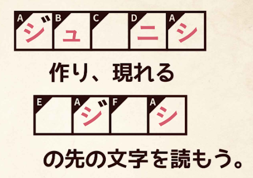
6枚の謎には、作れそうな「ジュ？ニシ」がたくさんあります。
紙同士を重ね合わせることで、動物のシルエットが完成します。
動物は全部で12種類あります。6枚をうまく重ね合わせて、すべて完成させましょう。
6枚の謎を組み合わせると、隙間の部分に矢印が現れます。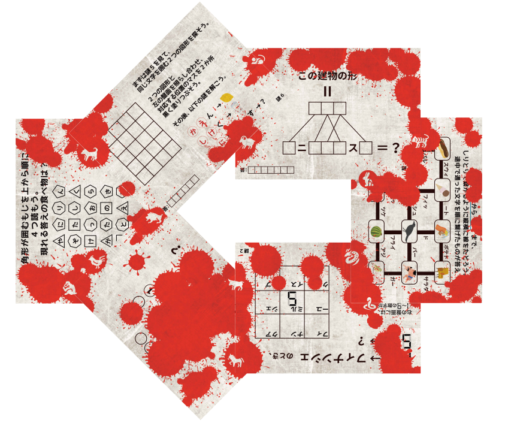
つまり、指示文の後半の「？ジ？シ」＝「ヤジルシ」とわかります。
矢印が指す先を読むと、
「答えのおしりのもじ」となります。
つまり、最後の答えは、
6問の答えの最後の文字を並べ替えてできる食べ物となります。
現状の解答用紙はこのように埋まっています。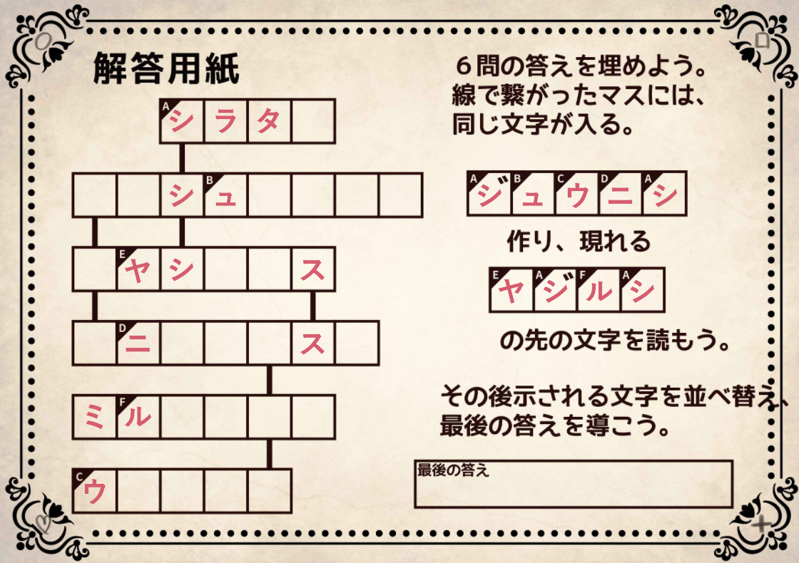
解答用紙の上から3つ目「？ヤシ？？ス」が何か考えましょう。
また、1文字目が「？ヤシ？？ス」と同じであることを踏まえて、
解答用紙の上から2つ目の答え「？？シュ？？？？」と
4つ目の答え「？ニ？？？ス？」が何か考えましょう。
「？ヤシ？？ス」＝「ハヤシライス」
「？？シュ？？？？」＝「ハッシュドポテト」
「？ニ？？？ス？」＝「ハニートースト」
です。
隠れたデジタル数字の部分を注意深く見てみましょう。
上側の1つ目の数字と思われるものは、
左下のセグメントが黒くなっています。
では、下側の2つ目の数字はどうでしょうか？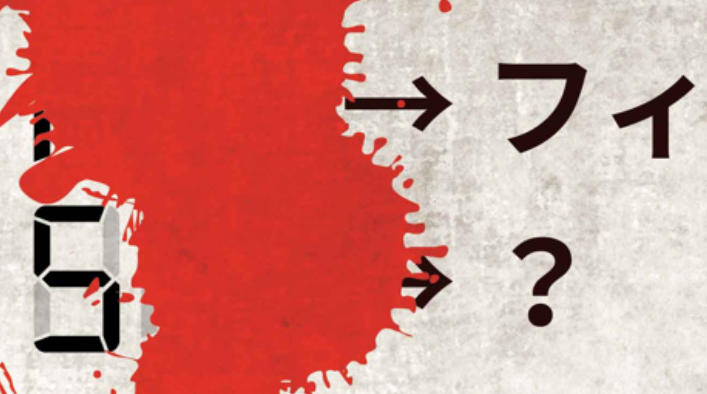
答えが食べ物であることを踏まえると、
答えの4文字目に当てはまる文字は、2通り存在します。
このうち、どちらが正解かを特定するには、
「ハヤシライス」が答えとなった謎を思い出す必要があります。
「フィ」に対応する数字と、2つ目の数字が異なっていることから、
答えは「ミルフィーユ」ではありません。
それ以外で考えられる答えは「ミルクレープ」です。
謎6（ハヤシライスが答えの謎）でマスを塗りつぶしたルールから、
同じ文字が2つあるのは「た」のみであることがわかります。
右下の隠れた文字のすぐ上に「き」があるので、
隠れている文字は「き」ではありえません。
よって、「しらたき」以外で考えられる答えは「しらたま」です。
全ての答えを整理すると
「シラタマ」「ハッシュドポテト」「ハヤシライス」「ハニートースト」「ミルクレープ」「ウ？？？ー」です。
それぞれの最後の文字を並べ替えてできる答えは
「トマトスープ」です。
上の「例」を参考に、下の盤面のマスを塗っていきましょう。
照明が照らすマスを塗ると、3桁の数字が浮かび上がります。
照明の向きにも注意しましょう。
「÷」の形に照らす照明だけを塗ると、このようになります。
すべての照明が照らすマスを塗ると、このようになります。
よって答えは「497」です。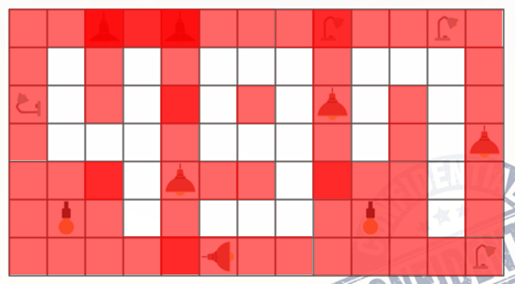
「パズルのルール」を参考に、パズルを解きましょう。
角から考えると解きやすいです。
途中まで解くと、このようになります。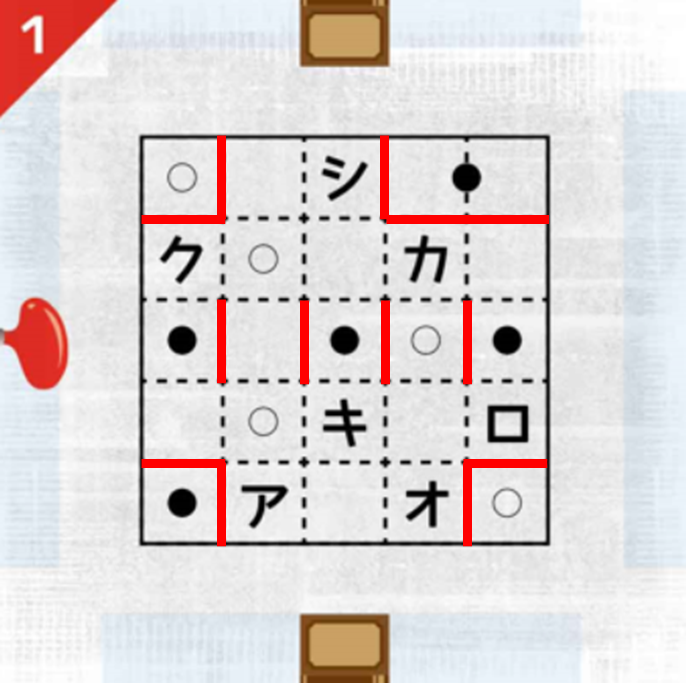
例えば上図の「シ」のマスが、左下の○の領域だとすると、
その点対称の位置は、さらに左下の●になってしまいます。
よって「シ」と○のマスは、別の領域に属するとわかります。
このように、「どのマスがどの領域に属するか」を考えましょう。
パズルを解くと、下記のようになります。
よって答えは「アカ」です。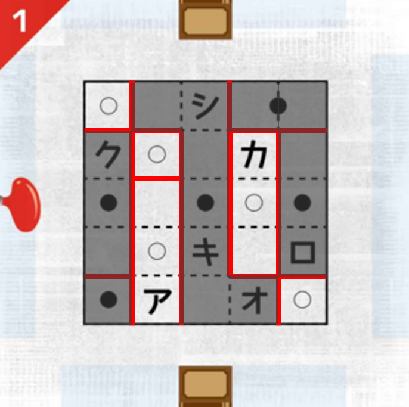
「パズルのルール」を参考に、パズルを解きましょう。
塗る・塗らないが確定する領域から考えましょう。
途中まで解くと、このようになります。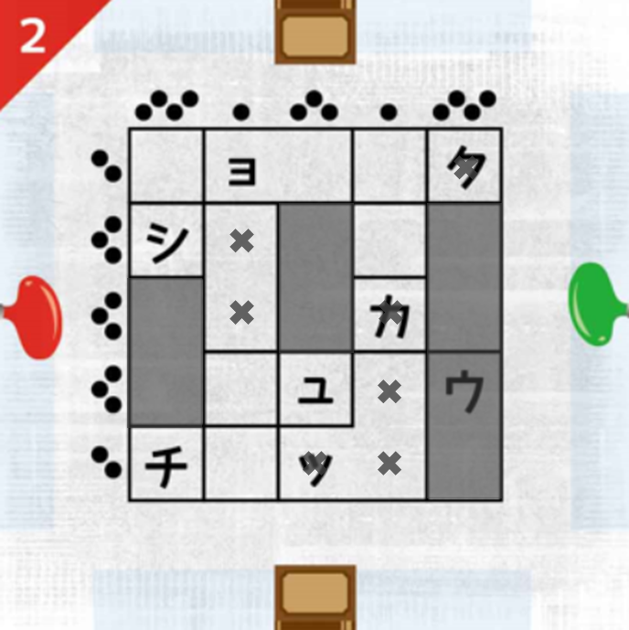
例えば、「ョ」がある領域が塗られると仮定してみましょう。
中央のタテは3マスなので、「ユ」のマスは塗られなくなります。
すると下から2行目のヨコは3マスなので、その左のマスを塗ることになりますが、これは左から2列目のタテの1マスに反します。
よって、「ョ」がある領域は塗らないとわかります。
パズルを解くと、下記のようになります。
よって答えは「チョッカク」です。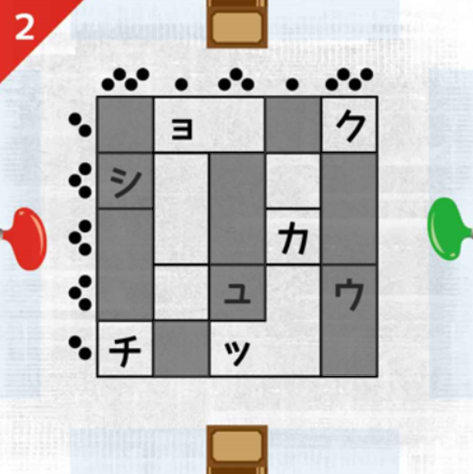
「パズルのルール」を参考に、パズルを解きましょう。
1マスの領域から考えると解きやすいです。
途中まで解くと、このようになります。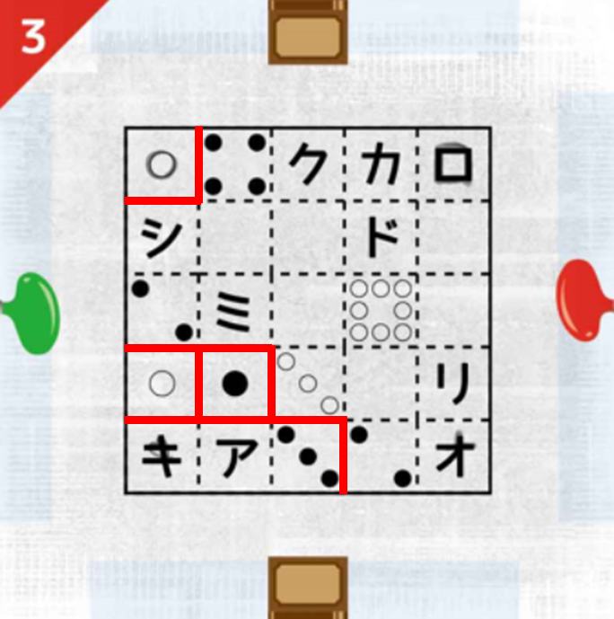
例えば左にある黒の2が、右の「ミ」と同じ領域だとすると、
上の「シ」のマスを領域に入れられるピンがありません。
よって、左にある黒の2は、上の「シ」と同じ領域とわかります。
このように、「どのマスがどの領域に属するか」を考えましょう。
パズルを解くと、下記のようになります。
よって答えは「ミドリ」です。
「パズルのルール」を参考に、パズルを解きましょう。
1マスの領域から考えると解きやすいです。
途中まで解くと、このようになります。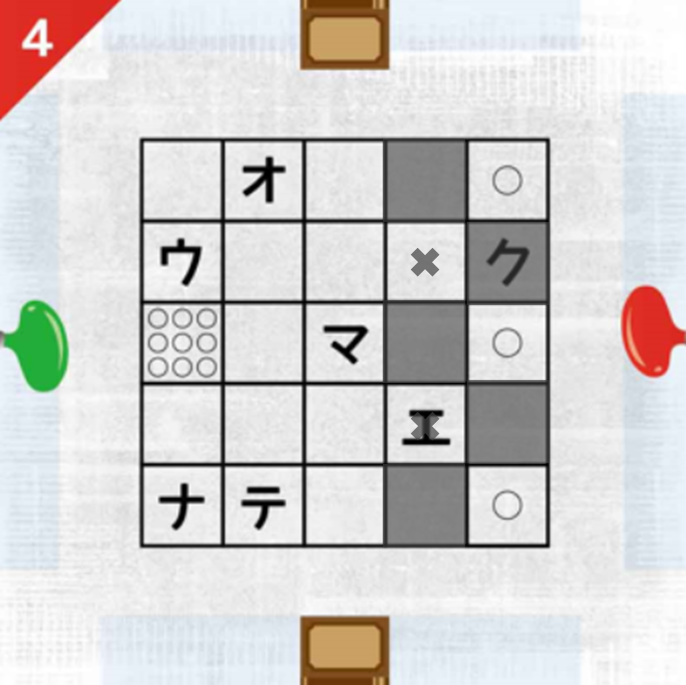
右の「エ」や、その2つ上のマスは塗られないことが確定しました。
※塗ると黒マスが長方形で無くなってしまうため。
ただ、すべての白マスはいずれかの○の領域に属します。
よって、上記の2マスは、左の○9に属するとわかります。
あとは余分なマスを黒く塗りましょう。
パズルを解くと、下記のようになります。
よって答えは「ウエ」です。
まずは、4つのパズルの答えを空欄に埋めてから読みましょう。
4つのパズルは、方向を変えると黒く塗られた部分が「n」「e」「w」「s」の文字に見えます。
絵の具をチューブから出しつつ4文字の配置が正しくなるように、
方位記号が書かれた「キューブの欠片」のまわりに、4つのパズルを置きましょう。
①の指示に従うと、このように配置できます。
それぞれ方位記号から見て、「news」が正しく読み取れます。
次に、本を図のように90度開いた状態にするには、4枚のパズルを立てる必要があります。
パズルを立てる際、本の背表紙を確認し、向きに注意しましょう。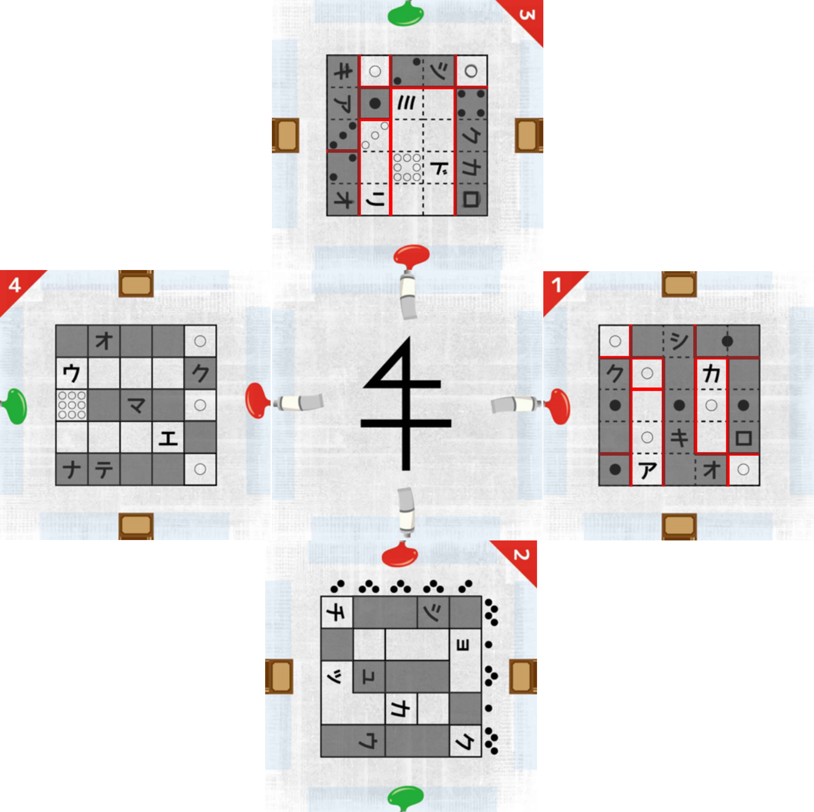
完成したキューブの、方位記号の面を下にして置きましょう。
すると、「90°」と書かれた面が上に来ているはずです。
最初に90度回してから、出入口の方へとキューブを転がすと、
最初の文字は「m」と読めるはずです。
方位記号が上の面に来たときは、特に何もする必要ありません。
そのまま出入口へ転がしていくと、6文字の英単語が現れます。
答えは「museum」です。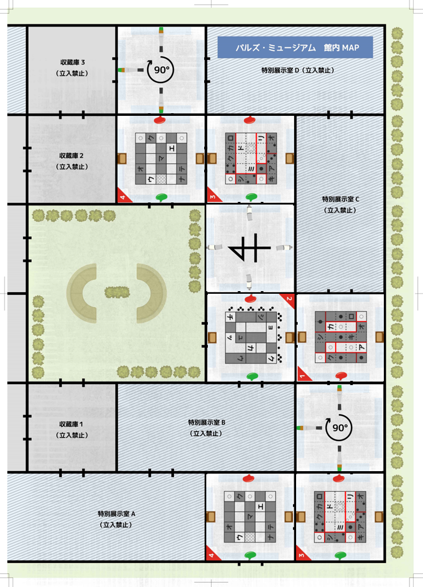
4人が旗の方を向いて一列に並びます。
九鬼さんの「前に2人いる」発言から、九鬼さんは旗から3番目にいるとわかります。
すると、残りの枠は旗から数えて1、2、4番目です。
六車さんは一条さんのすぐ後ろにいるので、隣り合う1、2番目にそれぞれいるとわかります。
旗から近い順番に、「一条→六車→九鬼→五味」となります。
よって答えは「695」です。
館内の様子をよく確認しましょう。
警備員は赤いネックレスを付けています。
赤いネックレスの特徴はどのようなものでしょうか。
赤いネックレスは、「慈愛のネックレス」という作品です。
どこかに「慈愛のネックレス」に関する情報はないでしょうか。
作品「愛情」を見せると、「慈愛のネックレス」を付けた人物は眠るようです。
作品「愛情」の特徴を作品名調査マニュアルを使って、導き出しましょう。
作品「愛情」の特徴は、「赤い木の立方体」です。
「赤い木の立方体」は手元のチーム番号シートを挟んでいる赤いキューブです。
裏面を覗くとマークがついていることから、これが作品「愛情」で間違いありません。
左側の情報を整理しましょう。
012で青が一つ光ったことから、0,1,2のいずれかが含まれていることがわかります。同様に考えると、6,7,8のいずれかが含まれていることもわかります。
0,1,2のいずれか、6,7,8のいずれか、そしてもう一つ含まれている数字が、左側の情報からわかります。
3,4,5で何も光らなかったことから、答えに3,4,5は含まれていません。よって、残り一つの数字は9であることがわかります。
この情報をベースに考えると、906で点灯した緑のランプは、9の位置があっていることを示している、とわかります。
他のランプが光っていないということは、0,6は答えに含まれていないこともわかります。このように、それぞれの情報からわかることを整理していきましょう。
ヒント2の情報から、917で点灯した二つのランプのうち、一つは9に反応していることがわかります。もう一つが1,7どちらに反応したかを考えていきましょう。
仮に1に反応していたとすると、答えの2桁目が1であるということになります。しかしその場合、一つ目の012で青に点灯した、という事実と矛盾します。
よって答えに1は含まれず、答えは9?7であることがわかります。
今までの情報から、答えに0も1も含まれていないこと、0,1,2のいずれかが含まれていること、答えは9?7であることがわかります。
これらを総合すると、答えは927です。
黒い壺に入っている花の色を仮定して考えましょう。
仮に、黒い壺の中に青色の花が入っていたとします。
この時、二体目のロボットからは、一体目のロボットの赤色の花、黒い壺の中の青色の花、の二つが見えていることになります。
もし二体目のロボットが緑色の花をつけていたら、一体目はどのように答えるか、を考えましょう。
※黒い壺の中身が青色である、と仮定しています。
二体目のロボットが緑色の花を着けていた場合、一体目のロボットは自分の花が赤色だ、とわかるはずです。
つまり、一体目のロボットが「わかりません」と答えたということは、二体目のロボットの花の色は緑色ではない、ということになります。
青色の花は壺の中に入っているので、二体目のロボットは自分の花の色が赤色だ、とわかるはずです。
ヒント1,2は、壺の中身が青色だと仮定しての話でした。
実際には、一体目も二体目も「わかりません」と答えていることから、壺の中身は青色の花ではないことがわかります。
そして全く同じ考え方で緑色の花でないこともわかるため、壺の中身は赤色の花です。
まずは、嘘の手がかりの数を整理していきましょう。
正しい鍵が一つだけであることから、手がかり１～３の中に嘘の手がかりが必ず二つあることがわかります。
ということは、手がかり４～６の中に、嘘の手がかりが一つあるとわかります。
続いて、手がかり５を見ていきましょう。
手がかり５が嘘であるのは、「手がかり３が本当かつ手がかり１も本当」である場合のみです。
しかし、正しい鍵は一つしかないため、この状況はあり得ません。
よって、手がかり５は本当の手がかりであることがわかります。
これまでのヒントから、手がかり４、６のうちどちらかは嘘の手がかりであることがわかります。
手がかり４，６はどちらも「手がかり２が本当ならば」という文になっています。
もし手がかり２が嘘だった場合、これらの手がかりがどうなるかを考えましょう。
手がかり２が噓の手がかりだった場合、手がかり４，６はどちらも本当の手がかりとなってしまいます。
よって、手がかり２が本当だということがわかるため、正しい鍵は青色です。
表示を10にするためには、×３、×３、＋１と通るか、＋１、×５と通るかの２通りです。
これができるルートを探しましょう。
＋１、×５と通るルートはありません。
×３、×３、＋１と通るルートを探しましょう。
Sから、左下、左上の×３を通ることで、×３、×３、＋１と辿ることができます。
通った文字の偶数番目を読み、答えは「カイロウ」です。
通った線でできる図形が点対称になることと、始まりが１であることから最後は９であることがわかります。
このように、対称性を利用して辿り方を絞っていきましょう。
３番目が６であることから７番目が４，８番目が２であることから２番目が８であることがわかります。
この条件を満たしつつ、正方形を作る方法を考えましょう。
ライトを頂点とした正方形を作ることはできません。
１→８→６→７→５→３→４→２→９
の順で辿ることで、真ん中に斜めの正方形ができます。
通った文字の偶数番目を読み、答えは「システム」です。
最後の間の4つ右に部屋があることから、最後の間は一番左だと推測することができます。
花の間の3つ左に鍵の間がある、という情報から、図のように並んでいると考えられます。
光の間の隣に鍵の間がないことから、図のように並んでいると考えられます。
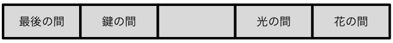
しかしこの状態だと、「数の間の隣には花の間がある」という条件を満たせません。
何が間違っていたかを考えましょう。
これまでの謎のイラストを見返すと、部屋が少し曲がっています。
もし、5つの部屋が一直線に並んでいないならばどうなるでしょう。
5つの部屋が上図のように円形に並んでおり、扉が外側についていると考えることで全てを説明することができます。
最後の間の右の部屋は、順に「光の間」「花の間」「数の間」「鍵の間」です。
よって、それぞれの答えの指定の文字を拾い、
答えは「スイロン（推論）」です。
まずは「フェルラントの手記」の下線部に目を通しましょう。
今知りたいのは、アトリエの入口の暗証番号です。
手記の『建物入口にある暗証番号は、住所と対応している。』
『町のシンボルマークを作ると、正確な住所がわかる』を参考に、
まずは町のシンボルマークを作ることを目標にしましょう。
今までの資料を見返してみましょう。
「PROLOGUE」が書かれた紙の裏面に注目しましょう。
そこに、町のシンボルマークが描かれています。
さらに、その下には町の地図もあります。
今手に入れた「透明シート」と組み合わせて、町のシンボルマークを作り出せないでしょうか。
「フェルラントの手記」によると、『町の外れに、青い屋根の大きな私の家を建てた』『その隣にアトリエも建てた』を参考に、
フェルラントのアトリエが、町の地図のどの建物かを導きましょう。
地図の左側に、青い大きな家があります。
その隣がアトリエなのではないでしょうか。
町の地図に透明シートを重ねると、4つのミュージアムやアトリエが通りと番地の交点に位置することがわかります。
4つのミュージアムの「入口の暗証番号」とは何だったでしょうか。
それは、アナタが今まで解いてきた「潜入の謎」の答えなのではないでしょうか…？
これまでの4つの「潜入の謎」の答え、すなわち3桁の番号を振り返ってみると、住所との対応がわかります。
クイン・ミュージアムの潜入の謎の答えは「125」、
つまり住所は「1丁目－2番通り－5番地」です。
他のミュージアムも同様に対応しています。
よって、アトリエは「14丁目－5番通り－2番地」、
つまり答えである暗証番号は「1452」です。
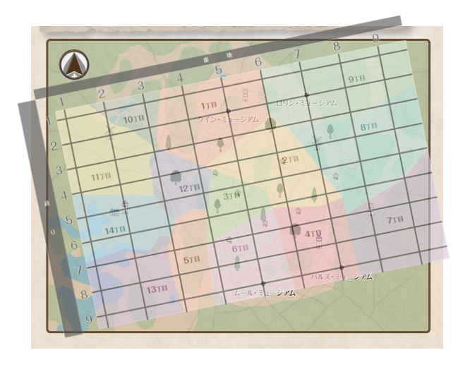
フェルラントの作品についての情報を振り返りましょう。
「フェルラントの手記」を見ると、『作品にはすべて、サインを描き入れている。』と書かれています。
一体、フェルラントのサインとはどんなものなのでしょうか…？
4つのミュージアムの中にも、フェルラントの作品があります。
これまでに見てきたフェルラントの作品を調べてみましょう。
この先にヒントはありません。